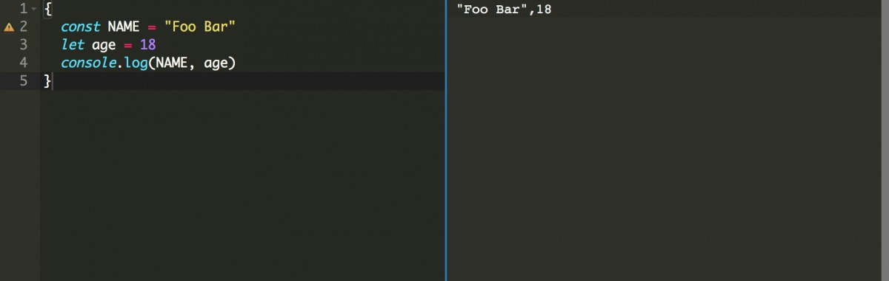
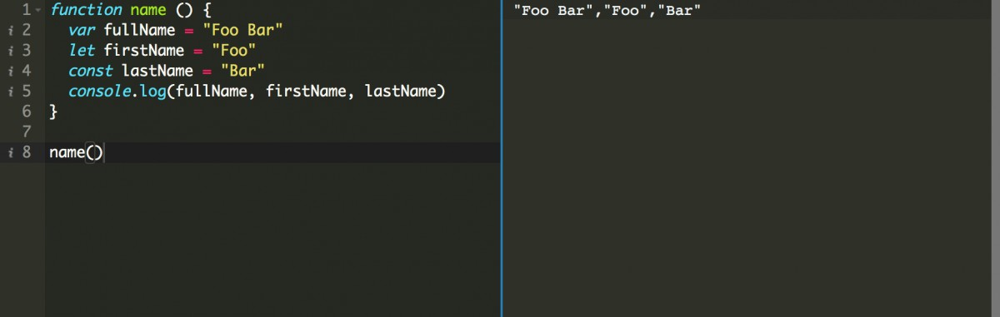
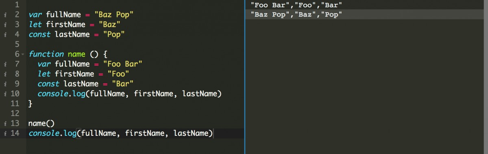
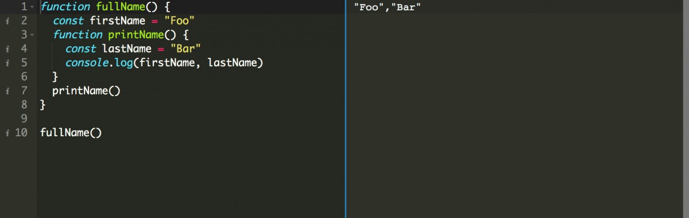

Not only for JavaScript but “scope” is a crucial fundamental concept towards any programming language. In JavaScript world we have separate books written only to understand the possibilities of using scopes! Because this fundamental concepts of scope are highly coupled towards understanding more complex design oriented concepts in JavaScript. If you are a JavaScript developer and do not understand scopes then take the time to read this article, it will help you to make your code more readable, isolated and maintainable.
Story time!
If you are walking on a road then you can get a car, in another scenario if you are floating in the space you might expect for a space rocket to help you land safe. We can’t expect a car in the space because it’s obvious that the car can’t fly. 🤔
If I now ask you what’s the scope of the car and the space rocket, your answers might be similar to this
- The scope of a car is the road
- The scope of a space rocket is the space
It seems like that your answers are correct and makes sense!
What is a scope in JavaScript?
Similarly, in JavaScript world we have variables that has access or might not have access at all in some particular part of your code. That means we use the concepts of scope in our code to control the availability of a variable that can contain a function, object or any value!
What are the available types of scope in JavaScript?
When JavaScript was young and Internet Explorer was dominating in that age it used to have only two types of scope, which are
1. Global Scope
2. Functional Scope
But modern JavaScript has few more types of Scope, let’s discuss about them with code examples.
Global Scope
Like most other languages JavaScript also has one global scope.
When we declare a variable which is not inside any function, class or block, it means that the variable is inside a global scope.
While defining a global variable for the global scope we may use the `var` keyword for a variable. Although keep in mind that using global scope is not recommended so if possible it’s better to avoid use of global variables.
Example Code
var name = "Foo Bar"
// Block
{
console.log('From Block:', name)
}
// Function
function displayName() {
console.log('From Function:', name)
}
displayName()
// Class
class Person {
name() {
console.log('From Class:', name)
}
}
(new Person()).name()
Output

From the above code example you may have noticed that we have declared the name variable inside the global scope(outside of any function, class or block). As a result the name variable is accessible inside the block, inside the function called displayName() and as well as from the instantiated object of the Person class.
Local Scope
Variables that we define within a particular part of the code which is also only accessible from within that part of the code is the local scope. This variables within this area are also known as local variables. In JavaScript there is two types of local scope,
1. Block Scope
2. Function Scope
Block Scope
In general when you write some code within {} curly braces, that is a code block in JavaScript.
We can define variables to be used within a block only using the keywords available in modern JavaScript. Which are let and const keywords.
While intentionally writing a block scoped code, make sure that you are not defining variables with var keyword as thus variables will be accessible in the global scope.
Example Code
{
const NAME = "Foo Bar"
let age = 18
console.log(NAME, age)
}
console.log(NAME, age)
In the above code we have defined name using const keyword because the name might not need to be modified and for the age we are using let as it might be updated each year.
First console.log within the block will output
Output

But the second console.log will throw an error,
Uncaught ReferenceError: NAME is not definedBecause this variables are only available within this block and has no existence outside the block.
Function Scope
If you define a variable within a function, that variable will available only within that function. This is the scope of a function or otherwise function scope.
In function scope you can define variables with `var`, `let` or `const` keywords.
Example Code
function name () {
var fullName = "Foo Bar"
let firstName = "Foo"
const lastName = "Bar"
console.log(fullName, firstName, lastName)
}
name()
Output

If you console.log(fullName, firstName, lastName) outside of the function it will throw error:
Error: Uncaught ReferenceError: fullName is not defined on line ..
What if we have similar variables outside the function block?
Here is the example code for that
var fullName = "Baz Pop"
let firstName = "Baz"
const lastName = "Pop"
function name () {
var fullName = "Foo Bar"
let firstName = "Foo"
const lastName = "Bar"
console.log(fullName, firstName, lastName)
}
name()
console.log(fullName, firstName, lastName)
It will output

Notice that, although the variables have same name in global scope and in function scope but they can remain isolated among them. Be careful, because if you remove the variable definitions from the function scope they will consume the variables from the global scope instead!
Lexical Scope
Lexical scope, otherwise known as Static Scope implies to a group of nested functions where the child function has access to the variables defined in their parent scope.
One important thing to note that, in a lexically bound scope the parent functions will be unable to access the values within its child functions.
Example Code
function fullName() {
const firstName = "Foo"
function printName() {
const lastName = "Bar"
console.log(firstName, lastName)
}
printName()
}
fullName()
Output

In the above code the parent function called fullName() and its children function called the printName(). Notice that the child function is able to access the value of the variable firstName defined within the parent function’s scope.
Using the above understanding of scopes can you implement a public and private scope variables and functions in JavaScript?
Well, first of all what is a public and private scope?
If you have some ideas about other languages like Java, Python or PHP they all have something similar to public scope and private scope.
A pseudo code will look like this,
// Public properties
public name
public function fullName() {
...
}
// Private properties
private email
private function setEmail() {
...
}
Let’s implement public scope and private scope in JavaScript!
const User = function () {
let firstName
let lastName
const displayUserName = function () {
console.log(firstName, lastName)
}
const setName = function (first, last) {
firstName = first
lastName = last
displayUserName()
}
return {
setName
}
}
User().setName("Foo", "Bar")
Here, the firstName, lastName variables and the displayUserName() function is private but the setName() function is public. They all have access to its parents functions scope, in other word its outer functions scope. So, if we have only access the function call of User then we can’t access or modify the value of firstName, lastName and displayUserName properties, but only has access to the setName function as expected.
Follow me on twitter @rakibtg and let me know if you have any thoughts on this article.